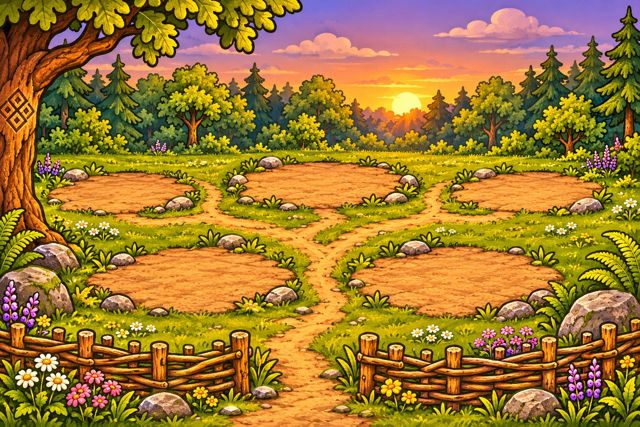
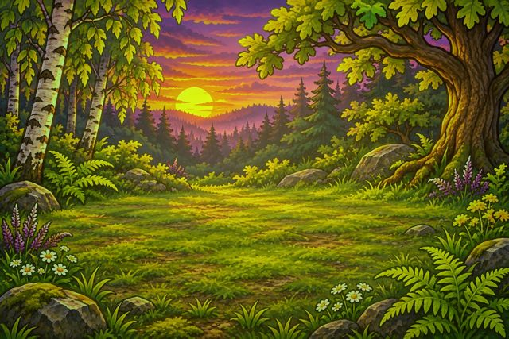
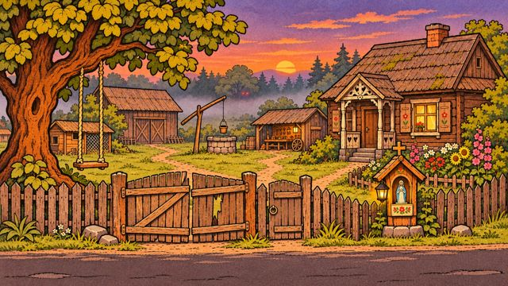

Dziękuję za kawę! ☕🌿
Ta strona jest tylko dla osób, które postawiły mi kawę. Dzięki takiemu wsparciu „Kwiat Paproci” i „Za Mgłą” mogą powstawać dalej, bez natrętnych reklam. Poniżej jest Twoja paczka podziękowań.
🎁 Paczka podziękowań
13 tapet z moich gier (poziome, a dwie pionowe na telefon) i mini-artbook w PDF.



Do użytku prywatnego jako tapety. Proszę nie sprzedawać i nie wrzucać jako własnych. Grafiki: Seboklarus (ChatGPT).
🌟 Imię w podziękowaniach
Jeśli chcesz, żebym wpisał Twoje imię w podziękowaniach na stronie i w grze, napisz mi, jak mam Cię podpisać (seboklarus.biuro@gmail.com).
🔥 Chcesz więcej?
Co miesiąc dla Strażników Ogniska pojawia się nowy Stwór miesiąca, dziennik prac, podglądy i ankiety. Wsparcie cykliczne dodasz w BuyCoffee.